Schedina Champions MD2 · 390 px


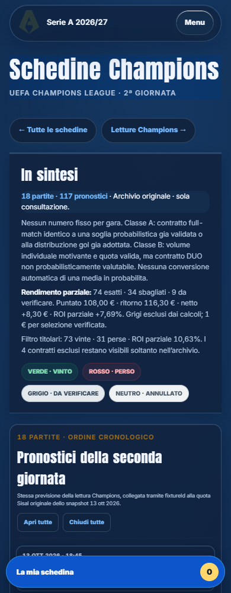
Baseline salvata prima degli interventi. Le immagini complete sono apribili singolarmente.

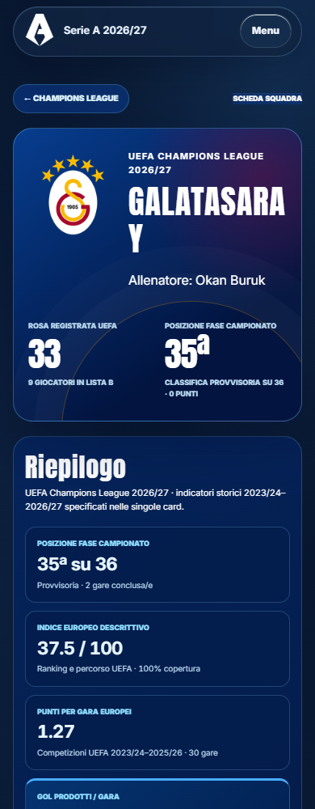
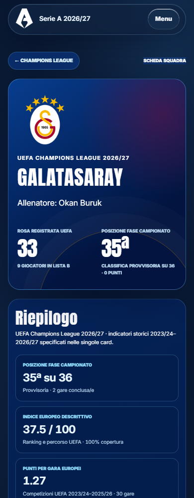

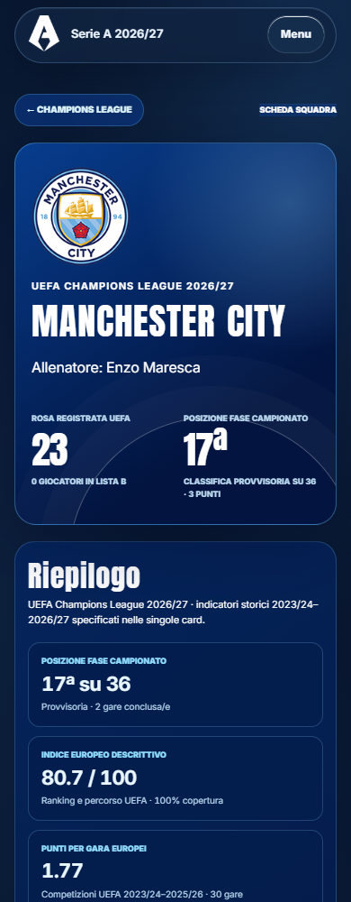
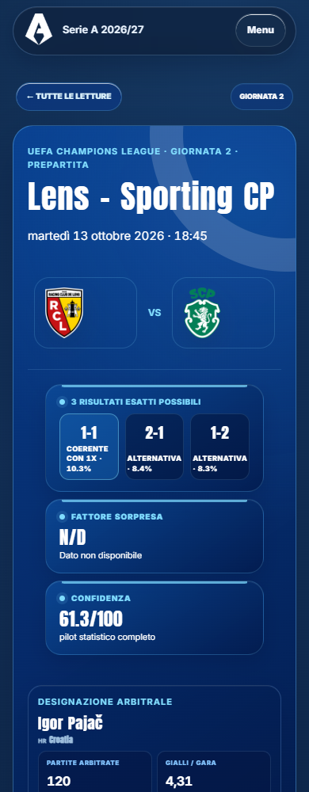
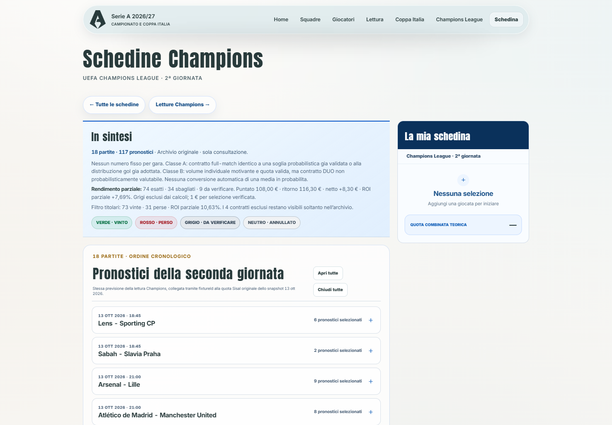
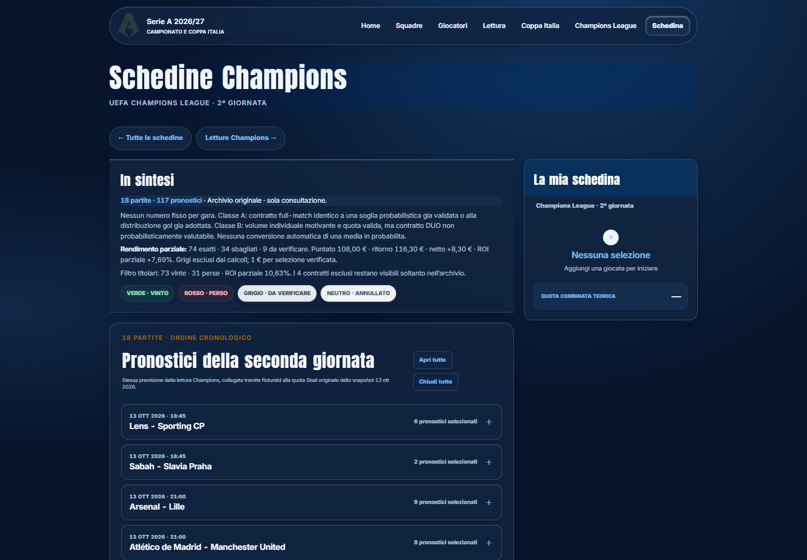
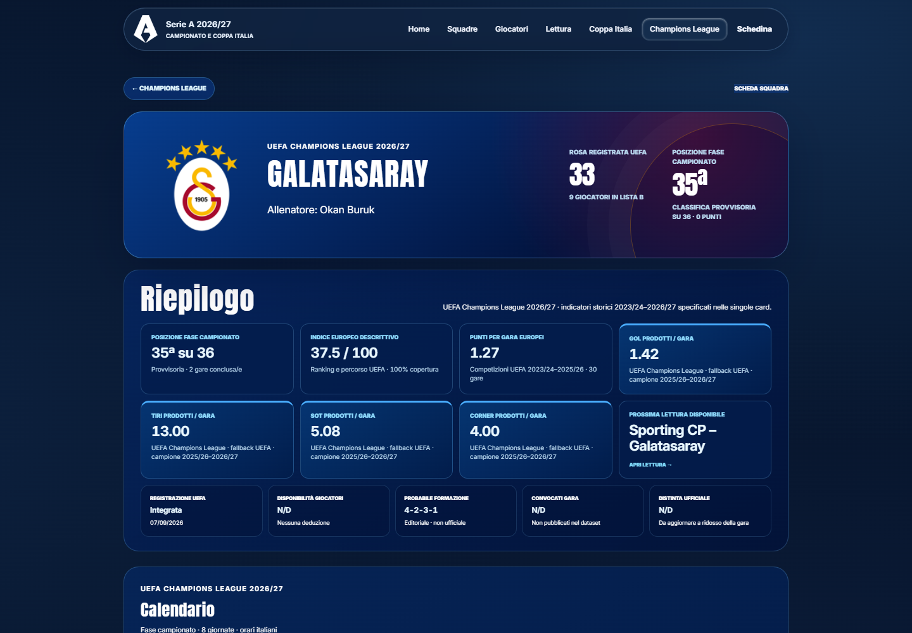
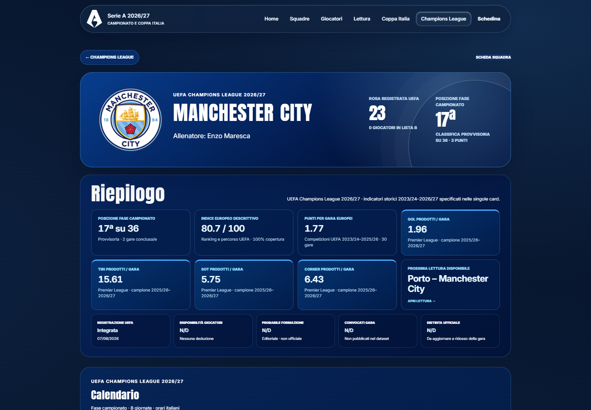

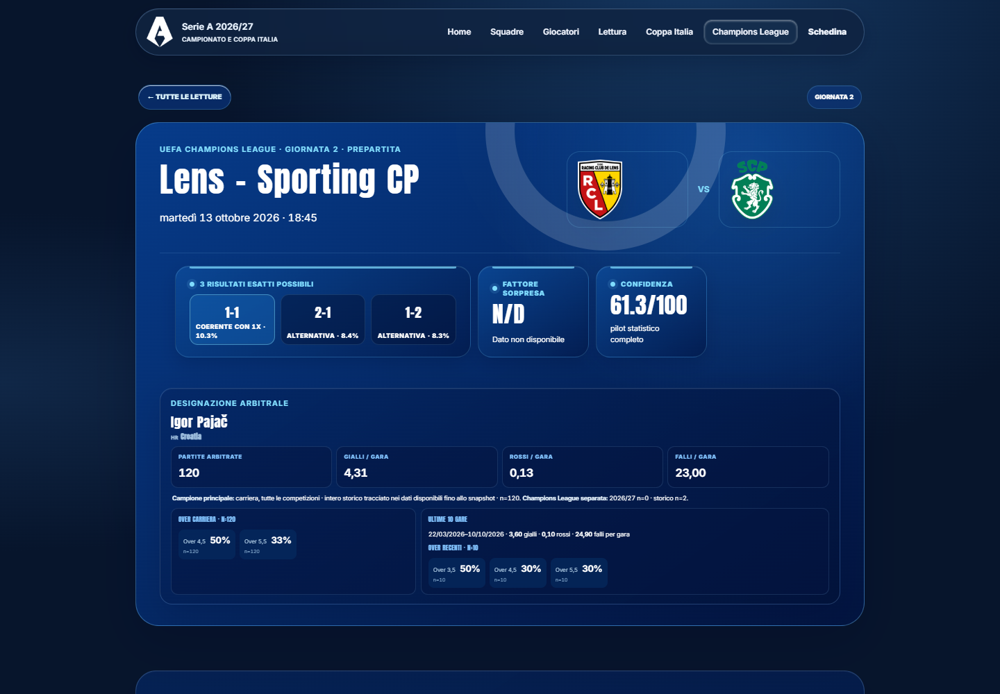
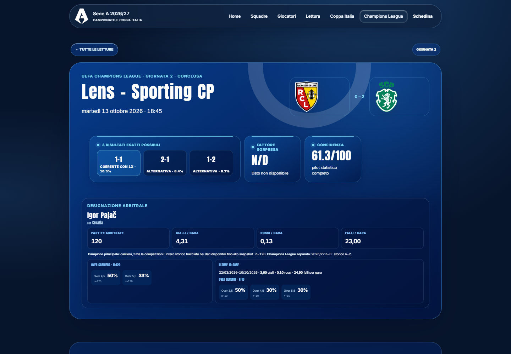
La sezione era assente nella baseline; ora mostra soltanto le quattro previsioni canoniche della partita.
Fiorentina–Como, vista universale mobile completa